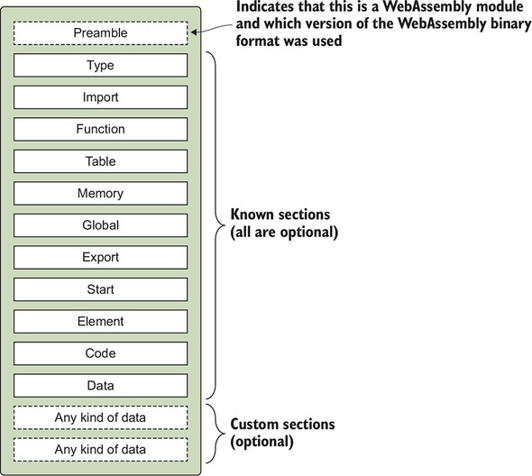

chapter_01_Meet_WebAssembly
代码转换
Once a browser has compiled the WebAssembly bytecode into machine code, the compiled module can be passed to a web worker (we’ll dig into web workers in chapter 9, but, for now, know that web workers are a way to create threads in JavaScript) or to another browser window. The compiled module can even be used to create additional instances of the module.
一但浏览器编译WebAssembly字节码为机器码, 编译后的模块 能够传输给web worker(我们挖掘web worker在第9章，但是，现在在javascript中web workers是创建线程的一种方法)或者另一个浏览器窗口。编译好的模块甚至能够用来创建额外的模块实例。

1.4.1. Preamble
The preamble contains a magic number (0x00 0x61 0x73 0x6D, which is \0asm) that distinguishes a WebAssembly module from an ES6 module. This magic number is then followed by a version (0x01 0x00 0x00 0x00, which is 1) that indicates which version of the WebAssembly binary format was used to create the file.
Only one version of the binary format exists at the moment. One of the goals with WebAssembly is to keep everything backward-compatible as new features are being added and to avoid having to increase the version number. If a feature ever arises that can’t be implemented without breaking things, then the version number will be increased.
The preamble contains a magic number (0x00 0x61 0x73 0x6D, which is \0asm) that distinguishes a WebAssembly module from an ES6 module. This magic number is then followed by a version (0x01 0x00 0x00 0x00, which is 1) that indicates which version of the WebAssembly binary format was used to create the file.
Only one version of the binary format exists at the moment. One of the goals with WebAssembly is to keep everything backward-compatible as new features are being added and to avoid having to increase the version number. If a feature ever arises that can’t be implemented without breaking things, then the version number will be increased.
1.6. How is WebAssembly secure?
One way that WebAssembly is secure is that it’s the first language to ever share the JavaScript VM, which is sandboxed from the runtime and has had years of hardening and security tests to make it secure. WebAssembly modules don’t have access to anything that JavaScript doesn’t have access to and will also respect the same security policies, which include enforcing things like same-origin policy.
One way that WebAssembly is secure is that it’s the first language to ever share the JavaScript VM, which is sandboxed from the runtime and has had years of hardening and security tests to make it secure. WebAssembly modules don’t have access to anything that JavaScript doesn’t have access to and will also respect the same security policies, which include enforcing things like same-origin policy.
JavaScript不能访问的WebAssembly的模块也不能访问